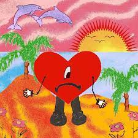
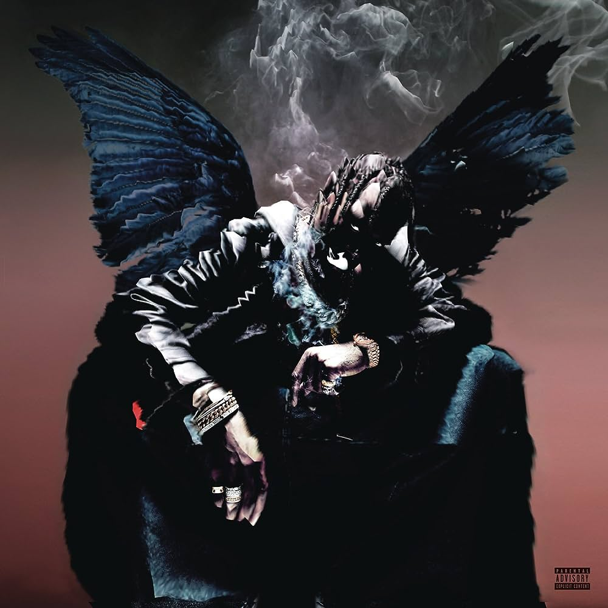
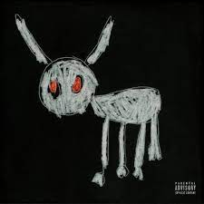

Explorando Mis Gustos Musicales
¡Bienvenidos a mi rincón musical en la web!
Permíteme llevarlos a un viaje a través de mis diversos gustos musicales, donde la variedad es la clave para explorar diferentes emociones y estados de ánimo.
En resumen, mi amor por la música abarca una amplia gama de géneros y estilos, cada uno con su propia historia y personalidad. A través de mi página web, espero compartir esta pasión con ustedes y descubrir juntos nuevas melodías y artistas que nos inspiren y nos muevan. ¡Bienvenidos a mi mundo musical!
Reguetón y el Mundo de Bad Bunny:
Para empezar, déjenme llevarlos al mundo vibrante y enérgico del
reguetón.
Entre los ritmos pegajosos y las letras contagiosas, Bad Bunny ha logrado conquistar mi corazón con su estilo único y su capacidad para reinventar el género una y otra vez. Sus canciones son una invitación a bailar y disfrutar sin restricciones.
Artista Favoritos:
CONOCE MÁS DE
Benito Antonio Martínez Ocasio, conocido artísticamente como Bad Bunny
Conocer más
Álbum Favorito:

Un Verano Sin Ti
Un verano sin ti es el cuarto álbum de estudio en solitario del cantante puertorriqueño Bad Bunny. Fue lanzado el 6 de mayo de 2022
100% RECOMENDADO
DATA
Data es el primer álbum de estudio en solitario, y el segundo en su carrera musical, del productor discográfico y compositor puertorriqueño Tainy
100% RECOMENDADO
Nadie sabe lo que va a pasar mañana
El álbum fue publicado el viernes 13 de octubre de 2023 a través de Rimas Entertainment, precediendo el lanzamiento de su anterior álbum Un verano sin ti.
100% RECOMENDADO
Hip Hop, Rap y Trap: Ritmos Impactantes:
Y no podemos olvidarnos del poderoso mundo del
hip hop,
el rap y el trap. Aquí es donde artistas como Travis Scott, Dr. Dre y Eminem dominan el escenario con sus letras ingeniosas y sus ritmos inconfundibles. Cada canción es una ventana a las realidades de la vida urbana y una celebración de la cultura hip hop en todas sus formas.
Artista Favorito:
CONOCE MÁS DE
Jacques Berman Webster, más conocido por su nombre artístico Travis Scott
Conocer más
Álbum Favoritos:

Birds in the trap sing mcknight
Birds in the Trap Sing McKnight es el segundo álbum de estudio del rapero estadounidense Travis Scott.
100% RECOMENDADO

Utopia
UTOPIA es el cuarto álbum de estudio del rapero estadounidense Travis Scott.
100% RECOMENDADO

For all the dogs
For All the Dogs es el octavo álbum de estudio del rapero y cantante canadiense Drake.
100% RECOMENDADO